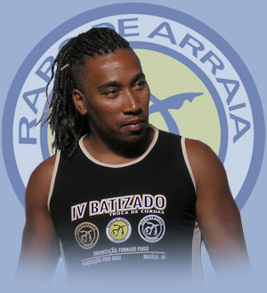

Mestre Balu: «Капоэйра — единственная среда, которая принимает фриков»

У нашей группы появился замечательный друг — Mestre Balu из группы Rabo de Arraia. В последнее время он с радующей частотой приезжает в Питер и неизменно тормошит всех своей неуемной энергией, раскачивает наши семинары, заставляет нас смеяться все тренировки подряд и добросовестно работать, критикует и высмеивает, издевается и подкалывает, в общем, вносит явное разнообразие в нашу местную капоэйру.
Историю, биографию и прочее можно почитать на википедии, а здесь я лучше напишу несколько его цитат, чтобы их не забыть, перечитывать и улыбаться.
Раньше я думала, что больше всех о капоэйре способен говорить Mestre Luis Claudio. Но теперь пальма первенства безоговорочно перешла к Mestre Balu. Он обожает говорить о капоэйре, и, что радует, при этом не занудствует, а постоянно шутит, матерится, смеется, перескакивает с темы на тему, задает неожиданные вопросы — в общем, и не заскучаешь с ним, и о капоэйре узнаешь, и португальский прокачаешь. Кроме того, Mestre Balu — превосходный актер, и даже наш местный бразильский градуаду хватается за голову, когда местре рассказывает очередную историю, приправляя ее острыми словечками, жестами и пантомимой. Все остальные при этом погибают от смеха.
При этом он способен быть очень серьезным и давать потрясающие рассудительные интервью, которые я, правда, пока не могу выложить))
Пока пара цитат:
Когда в капоэйре соединяются malicia и surpreza, получается malandragem.
Наши движения в капоэйре можно сравнить с почерком. Есть люди, которые пишут разборчиво, красиво и понятно, а есть те, чьи написанные слова не разобрать. Если продолжить метафору, то форма и выполнение формы — это почерк, а вот уместность — уже мысль, выраженная этим почерком.
Капоэйра — единственная среда, которая принимает фриков. Иногда вот посмотришь на человека — фрик фриком… Как он такой живет… А потом смотришь на него через пару лет в капоэйре — ничего такой, освоился…
Я тут увидел ваши видеозаписи, когда вы только начали заниматься капоэйрой… Вот я посмеялся! Нет, ну представьте, у этого парня такие штаны модные, на одной штанине написано огромными буквами CAPOEIRA DO BRAZIL, а на другой AXE BAHIA. И он ходит такой гордый. Нет, ну кто вам сказал, что это красиво?? Ну кто??
Люди! Жинга прекрасна! Вот посмотрите на меня. Я же некрасивый… Но, когда я начинаю делать жингу,… Я ПРЕКРАСЕН!
Европейским капоэйристам не хватает глубины. Вы машете ногами, но вы не думаете о том, что у капоэйры есть душа и дух. Вы даже не пробуете почувствовать этого, вы боитесь слов о магии, об энергии и хотите заниматься только телом.
Как понять, настоящий ли вы капоэйрист? Знаете? Есть один способ. Стопроцентный. Приезжаете в Бразилию. Приходите на большую роду, где присутствуют разные группы. Играете. И если после этого к вам подходят и спрашивают, из какого вы штата, вы прошли тест. Вы играете капоэйру.